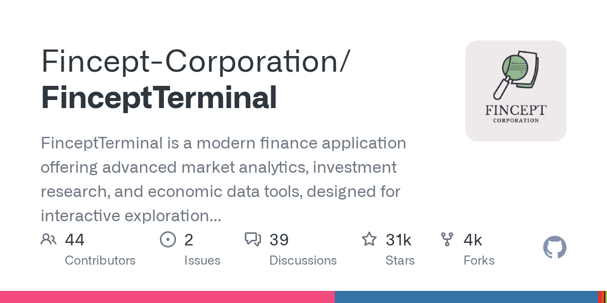

01 GitHub
Fincept-Corporation/FinceptTerminal
시장 데이터와 리서치를 한 화면에 모은 터미널
★ 31,087C++미표기 확인 필요릴리스 v4.5.0 (09.01)최근 활동 09.01테스트 없음예제 없음AGENTS.md 없음

이 저장소는 설치형 금융 터미널이다. 시장 데이터와 투자 리서치, 경제 지표를 한 화면에서 다루게 설계했다. 공개판과 기업용 비공개판을 나눠 운영한다. 이번 주에는 v4.5.0 릴리스를 올렸다.
무엇을 하는 물건인가
Fincept Terminal은 시장 분석과 투자 리서치를 위한 데스크톱 금융 앱이다. 사용자는 경제 지표와 분석 화면을 한 프로그램에서 넘겨 보며 탐색할 수 있다. 여러 사이트와 파일을 오가며 자료를 붙이는 대신, 리서치할 때 필요한 자료를 한 화면에 모아 보는 느낌이다. 공개 저장소판은 학습과 학술 용도로 제공한다.
스펙과 도입 조건
- 언어는 C++이며 릴리스 노트는 C++20과 Qt6, 임베디드 Python 분석 기능을 적었다.
- 설치 형태는 운영체제별 설치 파일 배포다. Windows 설치 프로그램, Linux용 deb·rpm·portable, macOS용 dmg를 제공한다.
- 의존 서비스는 README 발췌에 외부 API 키 필요 여부가 없다.
- 저장소 메타데이터의 라이선스 표기는 NOASSERTION이지만, README는 공개판을 AGPL-3.0 에디션이라고 적었다.
- 성숙도는 v4.5.0 릴리스가 있고, 공개판은 월 1회 릴리스를 낸다고 밝혔다.
이럴 때 쓰면 좋다
- 시장운영팀이 아침 브리핑 전에 주요 경제 지표와 시장 화면을 한 프로그램에서 훑어볼 때 쓰면 좋다.
- 리서치 조직이 종목 메모를 만들며 시세 화면과 분석 도구를 자주 오갈 때 검토 시간을 줄일 수 있다.
- 금융 데이터 학습용 환경을 찾는 사내 스터디가 설치형 터미널 구성을 체험할 때 적합하다.
핵심 기능
- 시장 분석, 투자 리서치, 경제 데이터 도구를 한 환경에 모아 대화형 탐색을 지원한다.
- Qt6 기반 데스크톱 앱으로 50개 이상 화면을 제공한다.
- 임베디드 Python 분석 기능을 넣어 터미널 안에서 분석 작업을 확장할 수 있다.
이번 릴리스에서 바뀐 점
이번 릴리스 노트는 v4.5.0을 현재 배포판으로 제시했다. 릴리스 노트 본문에는 Qt6 기반 C++20 금융 터미널, 임베디드 Python 분석, 50개 이상 화면과 운영체제별 요구 사항이 적혀 있다. 다만 추가·변경·삭제 기능 목록과 업그레이드 주의 사항은 발췌에 없다. 그래서 기존 사용자라면 설치 가능 운영체제와 배포 파일 형식부터 먼저 확인해야 한다.
| 플랫폼 | 배포 파일 | 설치 방식 |
|---|---|---|
| Windows x64 | FinceptTerminal-*-setup*.exe | 설치 프로그램 실행 |
| Linux (Debian/Ubuntu) | FinceptTerminal-*-linux-x64.deb | deb 패키지 설치 |
| Linux (Fedora/RHEL) | FinceptTerminal-*-linux-x64.rpm | rpm 패키지 설치 |
| Linux (portable) | FinceptTerminal-*-linux-x64-setup.run | 실행 권한 부여 후 실행 |
| macOS Apple Silicon | FinceptTerminal-*.dmg or setup | DMG 열고 Applications로 이동 |
사내 도입 체크
- 외부 API 호출 여부는 발췌에 없다. 실제 시세와 경제 데이터가 어디서 오는지 확인이 필요하다.
- 공개판은 학습·학술용이라고 적혀 있다. 실업무와 고객 대응에 써도 되는지 이용 조건을 먼저 검토해야 한다.
- 유지보수 주체는 Fincept-Corporation 조직 계정으로 보인다.
- 기업용 비공개판이 따로 있다. 상용 대체재와 오픈소스 학습판을 분리해 비교하는 편이 맞다.
주요 용어
금융 터미널(Financial terminal): 시세·지표·리서치를 한 화면에서 보는 업무용 프로그램 온프레미스(On-premises): 사내 서버나 PC에 직접 설치해 쓰는 방식 Qt: 데스크톱 화면 프로그램을 만드는 개발 도구 모음 임베디드 Python(Embedded Python): 응용프로그램 안에서 Python 분석 기능을 함께 쓰는 방식
원문 정보
제목: Fincept-Corporation/FinceptTerminal
최근 활동: 2026.09.01
출처 URL: https://github.com/Fincept-Corporation/FinceptTerminal